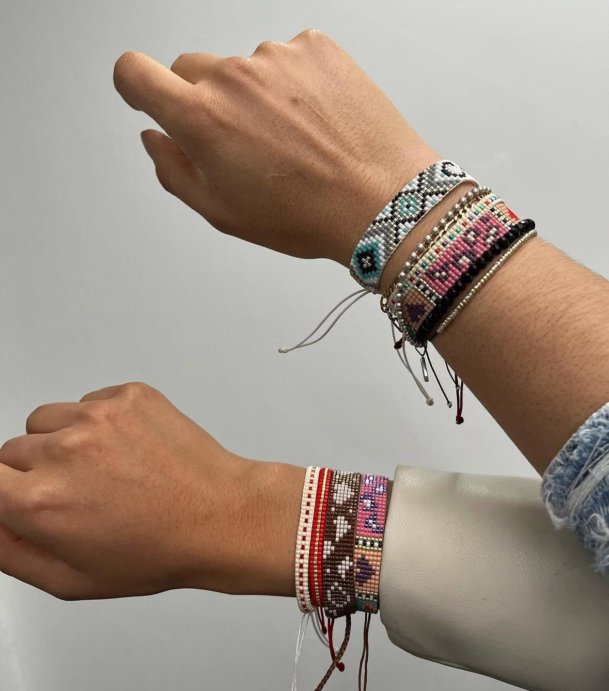
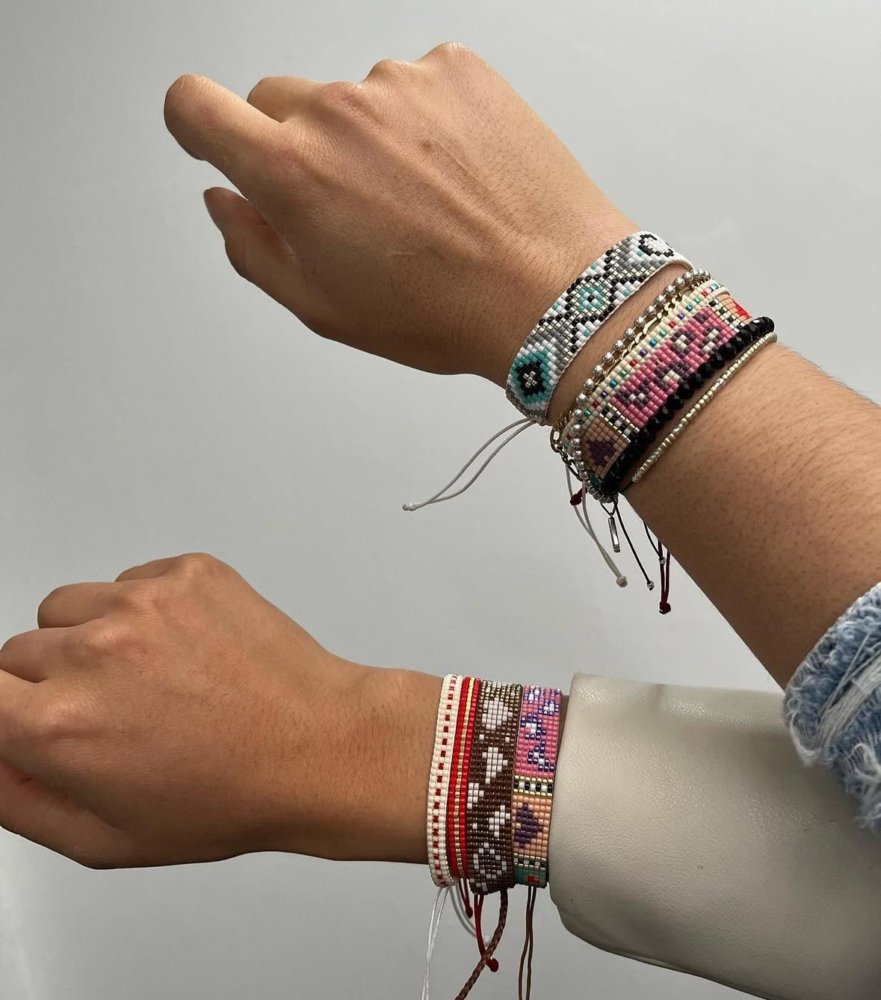

Nuestra Historia
Desde niña sentí una conexión especial con las joyas. Me encantaba usar los accesorios de mi madre,
admirar sus detalles y cómo cada pieza parecía tener su propia esencia. Para mí no eran solo adornos,
eran pequeños tesoros llenos de historia y significado.
Con el tiempo fui creciendo y también creció mi curiosidad. Me empezó a llamar profundamente la atención
la forma en que se creaban los accesorios tejidos: la paciencia, la delicadeza y el arte que hay detrás de cada
diseño. Descubrí que cada cuenta, cada hilo y cada color podían transformarse en algo único.
Fue así como comencé a crear accesorios para mí, experimentando con diferentes materiales, combinaciones
y estilos. Cada pieza era una forma de expresar mi creatividad y mi amor por los detalles.
Sin darme cuenta, las personas a mi alrededor comenzaron a enamorarse de mis accesorios. Me preguntaban dónde los había
comprado y querían uno igual o incluso personalizado.
En ese momento entendí que lo que hacía no era solo un gusto, sino una pasión que podía compartir.
Así nació MAYO, como el resultado de una historia que empezó en mi infancia y fue creciendo conmigo.
Hoy cada accesorio está hecho con dedicación, amor y el deseo de que quien lo use se sienta especial.
Nuestros Productos
PULSERAS

ANILLOS
COLLARES
Galería


 

Contacto
Instagram: @mayo_bylimarima
WhatsApp: 3212326495